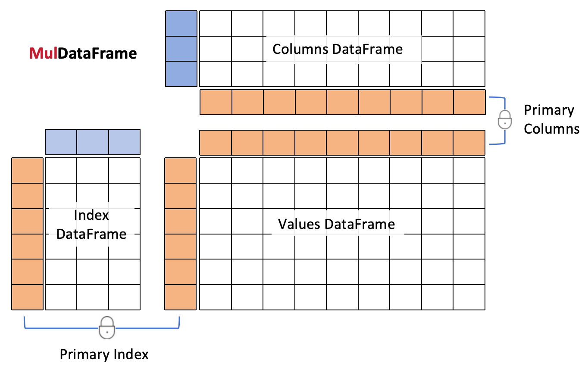

MulDataFrame
MulDataFrameMulDataFrame documentation#
“A multi-index is just a data frame, period.”
{kind=link}
Useful links: Source Repository | Pandas
Quick Start#
A MulDataFrame object consists of three pandas dataframes that are accessed through the .index, .columns and .df attributes. While .index and .columns refer to the index and the columns dataframes, .df provides a deepcopy of the values dataframe.
>>> import pandas as pd
>>> import muldataframe as md
>>> index = pd.DataFrame([[1,2],[3,6],[5,6]],
index=['a','b','b'],
columns=['x','y'])
>>> columns = pd.DataFrame([[5,7],[3,6]],
index=['c','d'],
columns=['f','g'])
>>> mf = MulDataFrame([[1,2],[8,9],[8,7]],
index=index,columns=columns)
>>> mf
(3, 2) g 7 6
f 5 3
c d
-------- ---------
x y c d
a 1 2 a 1 2
b 3 6 b 8 9
b 5 6 b 8 7
>>> mf.columns
f g
c 5 7
d 3 6
>>> mf.df
c d
a 1 2
b 8 9
b 8 7
The index of the index dataframe and the index of the columns dataframe are guaranteed to be the same as the index and the columns of the values dataframe. They are called the primary index and the primary columns.
>>> mf2 = mf.copy()
>>> mf2.index.index = ['d','e',5]
>>> mf2.df
c d
d 1 2
e 8 9
5 8 7
MulDataFrame uses .mloc to perform multi-indexing. Its indexer can be a list or a dict. If a list is used, write ... as placeholders to select all values in a column of an index dataframe. The example below returns a MulSeries object whose name is a pandas Series and index a pandas DataFrame.
>>> mf.mloc[[..., 6],[3]]
(2,) g 6
f 3
d
------- ------
x y d
b 3 6 b 9
b 5 6 b 7
MulDataFrame implements a new pattern of multi-indexing called successive indexing rather than hierarchical indexing. You can change the order of successive indexing by using a dict indexer. The example below will report an error if a list indexer is used, e.g. mf.mloc[[[3],[2,6]]]. You can mixedly use the two types of indexers in a muldataframe with, for exmaple, a dict indexer for the rows and a list indexer for the columns.
>>> mf.mloc[{'y':[2,6],'x':[3]}]
(1, 2) g 7 6
f 5 3
c d
-------- ---------
x y c d
b 3 6 b 8 9
MulDataFrame allows you to query the three dataframes alone or in combinations.
>>> mf.query('d < 9',index='y==6')
(1, 2) g 7 6
f 5 3
c d
-------- ---------
x y c d
b 5 6 b 8 7
>>> mf.query('d < 9',index='y==6',columns='f==5')
(1, 1) g 7
f 5
c
-------- ------
x y c
b 5 6 b 8